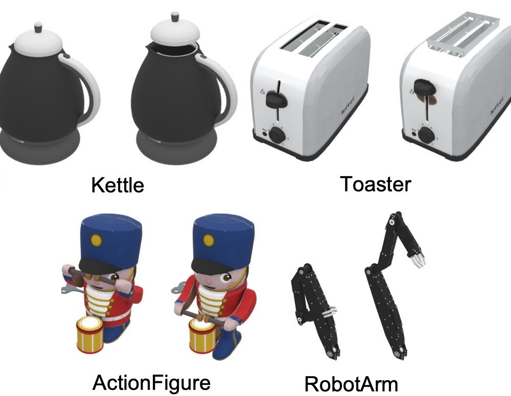

ArtiAtlas: A Holistic Ecosystem for Diverse 3D Articulation Modeling
SIGGRAPH Asia 2026
ArtiAtlas: a holistic ecosystem for diverse 3D articulation modeling, turning static 3D assets into articulated, functional objects.
@inproceedings{lu2026artiatlas,
title={{ArtiAtlas: A Holistic Ecosystem for Diverse 3D Articulation Modeling}},
author={Lu, Junzhe and Lin, Jing and Cao, Ziang and Wang, Haoqian and Liu, Ziwei and Zhang, Jianfeng},
booktitle={ACM SIGGRAPH Asia Conference Papers},
year={2026}
}